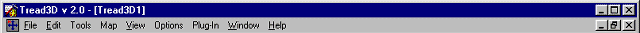
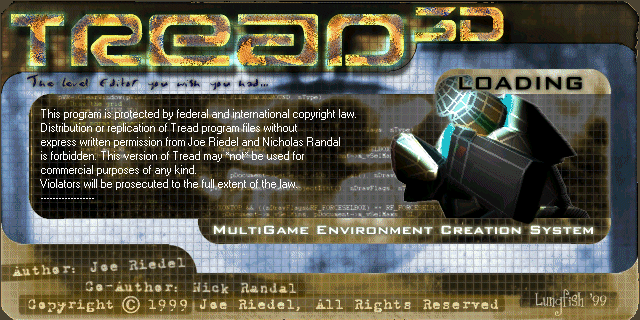
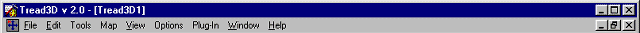

|  | ||||
| ||||
|
| |||

|
Presentation created by Wayne W. Smith |
|
|
|---|
Welcome to the "Basics Manual" for the most user friendly level editor made "Tread3D". In this presentation you will be given a guided tour of all the tools available; to you the author.
|
|
|---|
This presentation is divided into three main parts. First there are the basic information pages which can be navigated by clicking on a part of the Tread3D Window you are interested in or by clicking on a item in the formal index; second there is a tutorial on "Getting Started" in which you will be walked through the setup procedure; third there is the mechanics of Tread3D and in this section there are mini-tutorials on how to accomplish basic operations.
|
|
|---|
Move your mouse to an area in the Tread3D Window, then mouse-click to go to a description of that area.
|  | ||||
| ||||
|
| |||
(You may also go to the formal index below)
Just mouse-click on a topic in the formal index and go to its description.
|
|
|---|
Just mouse-click on the Tread3D logo and lets get mapping.

|
|
|---|
Just mouse-click on a topic and go to its tutorial.
- MECHANICS
- MAKING A BRUSH
- SAVING YOUR WORK
- HOLLOWING A BRUSH
- GROUPING/UNGROUPING
- CHANGING/MANIPULATING TEXTURES
- PLACING AN ENTITY
- LINKING AN ENTITY TO A BRUSH
- USING VISGROUP
- CARVING A BRUSH
- CLIP OR SPLIT A BRUSH
- ZOMBIELIGHT PLUGIN (ACTUAL LIGHTING IN THE 3D VIEW)
- AUTOMATIC SHAPE BUILDER PLUGINS
- ANCHOR POINTS
- MANIPULATING THE CAMERA